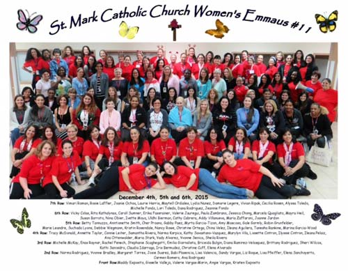
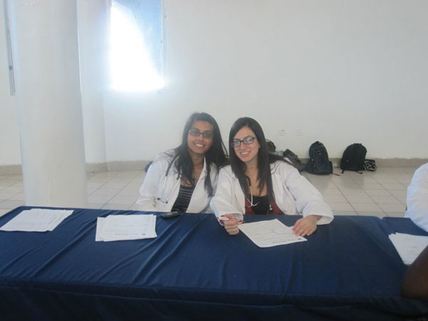
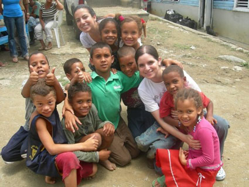

Emmaus Retreat. Helped in a Christian retreat. 2014-present.
Health Fair. Examine patients by taking vital signs and history then presenting their case to a Doctor. 2012-2012.
Mission Trip. Went to Dominican Republic for 10 days to assist the Doctors in examining 100-200 patients a day, providing the patients with care and medication. Rotated with other students in taking blood pressure, pulse and assisting Doctors in minor surgeries, injections and organizing medication. Summer 2007 and 2008.
